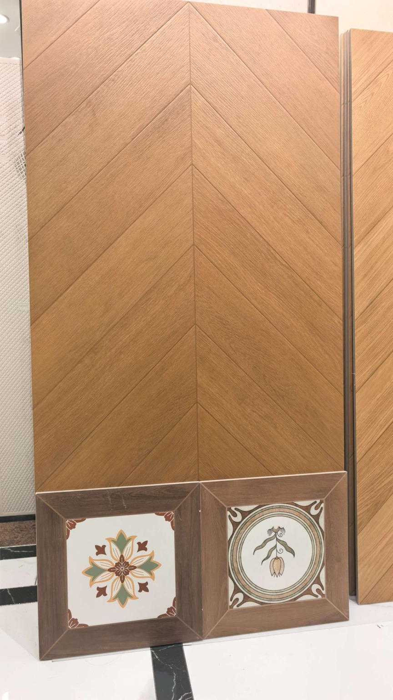
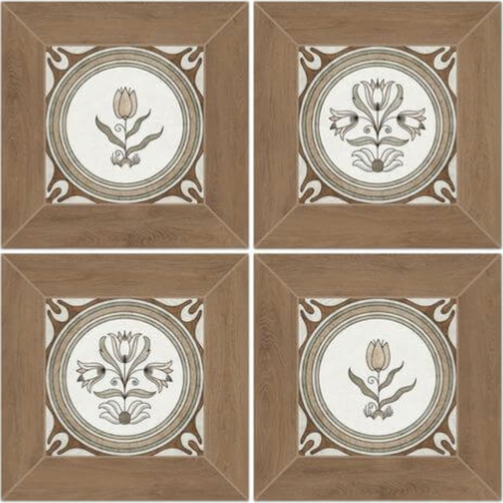
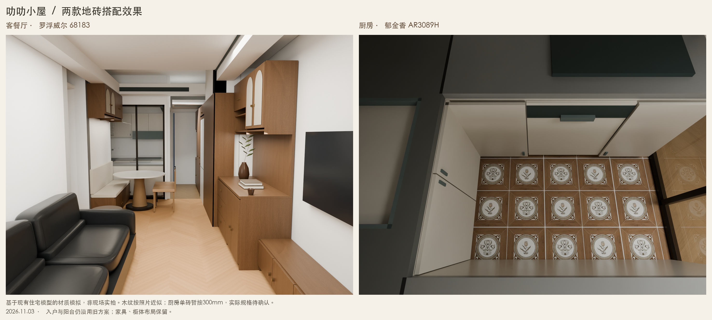

2026年11月3日 · 以用户本次确认和提供的照片为依据

罗浮威尔木纹砖。模型沿用鱼骨方向预览，调整为照片中的暖木色；细木纹为程序近似。
用户已确认整片600×1200毫米；未取得厂家无缝贴图，整片砖缝与木纹比例尚未校正。照片中的其他花砖不属于客厅选择。
罗浮威尔花砖，替代旧SPC方案。贴图取自本次产品图，保留木框、奶油底色与两种花型。
用户于2026年11月4日确认单砖300×300毫米；花型配比、缝宽与铺向待确认。
基于现有住宅模型渲染，左侧客餐厅、右侧厨房。木纹为照片色感近似；花砖使用用户产品图，单砖尺寸已确认300×300毫米，排版未确认。不是现场实拍或厂家色卡。点图可放大。
网页沿用VB-01空间基准，日常以此网页查看。此次效果图基于已有v04客餐厅品质模型单独换材质渲染，其家具细节与光照比网页预览更丰富；旧模型文件保留，无需操作建模软件。
三个卧室原木地板、卫生间原地面沿用。入户与阳台仍显示旧木纹砖方案，待确认是否统一为68183。
既有待核事项：厨房整体定位和窗洞、书房展床与固定书柜冲突、冰箱安装余量、柜体回风和检修空间。书房约36毫米、走廊约17毫米坐标残差仍在，不据此排施工砖或下单。